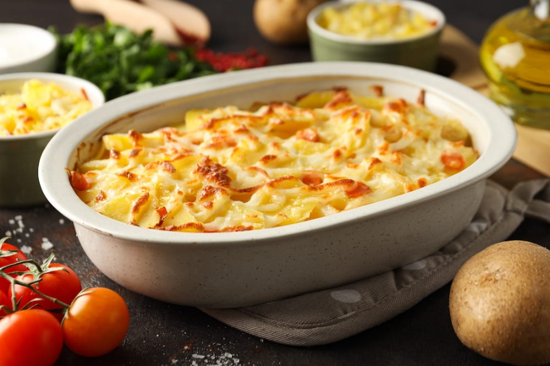

Receta de Tartiflette Casera!
Si existe un plato que grita “invierno”, “montaña” y “con esto se me reinicia la vida”, ese es la tartiflette. Imagina una fuente recién salida del horno, burbujeante, dorada, con capas de patata tierna, panceta crujiente, cebolla caramelizada y, por supuesto, una cantidad generosa de queso Reblochon derretido. Es, básicamente, un abrazo en forma de comida. Hoy vamos a desentrañar todos los secretos de la receta de tartiflette para que te quede perfecta. No te asustes por el nombre francés, porque es más fácil de hacer de lo que parece y el resultado es espectacular. ¡Prepárate para enamorarte!

Rinde: 4 porciones
Tiempo de preparación: 1 hora
Ingredientes
- 1 kg de patatas
- 1 queso Reblochon o brie entero (unos 450-500g)
- 200g de panceta ahumada o bacon en tiras
- 2 cebollas grandes
- 1 diente de ajo
- 150 ml de vino blanco seco
- 200 ml de nata líquida para cocinar (crema de leche)
- Nuez moscada (opcional)
- Aceite de oliva
- 1 cdta. de mantequilla
- Pimienta negra a gusto
- Sal a gusto
Sobre la receta de Tartiflette
La tartiflette es un plato tradicional de la región de Saboya, en los Alpes franceses. Su nombre viene de “tartiflâ”, que en el dialecto local significa patata. Aunque parezca una receta ancestral, en realidad fue popularizada en los años 80 por los productores del queso Reblochon para impulsar sus ventas. ¡Y vaya si lo consiguieron! La clave de su sabor está en la combinación de ingredientes sencillos pero potentes. No es un plato ligero, para qué nos vamos a engañar, pero es de esos placeres que merecen la pena. Es ideal para una cena con amigos después de un día de frío o simplemente para darte un homenaje porque sí.
Cómo hacer tartiflette paso a paso
- Preparar las patatas: Lavar bien las patatas y ponerlas a cocer con piel en abundante agua con sal.Cocinar durante unos 20-25 minutos, hasta que estén tiernas pero sin deshacerse. Escurrir, dejar que se templen un poco, pelarlas y cortarlas en rodajas de aproximadamente 1 cm de grosor.
- Preparar el sofrito: Mientras se cocinan las patatas, pelar y cortar las cebollas en tiras finas (juliana).En una sartén grande, calentar un poco de aceite o mantequilla y pochar la cebolla a fuego medio-bajo hasta que esté transparente y blandita (unos 10-15 minutos).
- Añadir la panceta: Subir el fuego, añadir la panceta a la sartén y cocinar hasta que esté dorada y crujiente.
- El toque del vino: Verter el vino blanco en la sartén para desglasar, raspando el fondo con una cuchara de madera para levantar todos los jugos. Dejar que el alcohol se evapore durante un par de minutos.
- Montar la tartiflette: Precalentar el horno a 200°C.Frotar una fuente apta para horno con el diente de ajo partido por la mitad y engrasar con un poco de mantequilla para evitar que se pegue la patata.
- Crear las capas: Colocar una capa de rodajas de patata en el fondo de la fuente. Salpimentar y añadir un toque de nuez moscada si se desea.Cubrir con la mitad de la mezcla de cebolla y panceta.Repetir con otra capa de patatas y el resto del sofrito.
- Añadir la nata: Verter la nata líquida por toda la superficie,asegurándose de que se distribuya bien entre las capas.
- El gran final con el queso: Cortar el queso Reblochon o brie en tiras y disponerlas arriba de las patatas.
- Hornear: Llevar al horno durante unos 20-25 minutos,o hasta que el queso esté completamente derretido, dorado y burbujeante.
- Servir: Dejar reposar un par de minutos fuera del horno y servir la tartiflette bien caliente, directamente de la fuente.